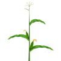

Crops
Browse biological activity by production context — citrus, maize, potatoes, grapes, and more.
38 crop contexts
Start with the lens that fits your question — by crop, by pest or disease, or by product.

Browse biological activity by production context — citrus, maize, potatoes, grapes, and more.
Start with the problem — bollworm, thrips, powdery mildew, rust, and more.
Browse registered products — biopesticides, inoculants, semiochemicals, and more.
Field trials, case studies, and technical reference material behind the product and pressure records.
MRL references, certification standards, and jurisdiction comparison for market access and compliance.
Guidance notes, legislation summaries, and linked research for anyone who needs more than a browse card.
Country context, recurring patterns, and signs of movement across the African biologicals registration landscape.